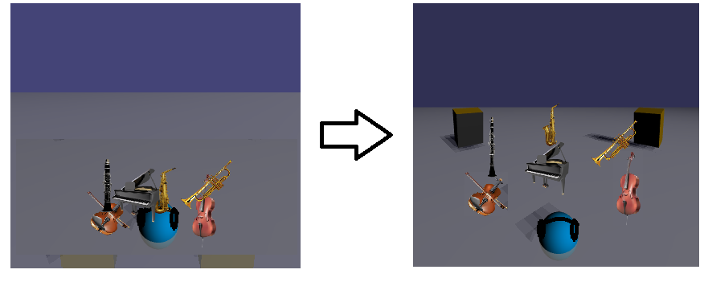
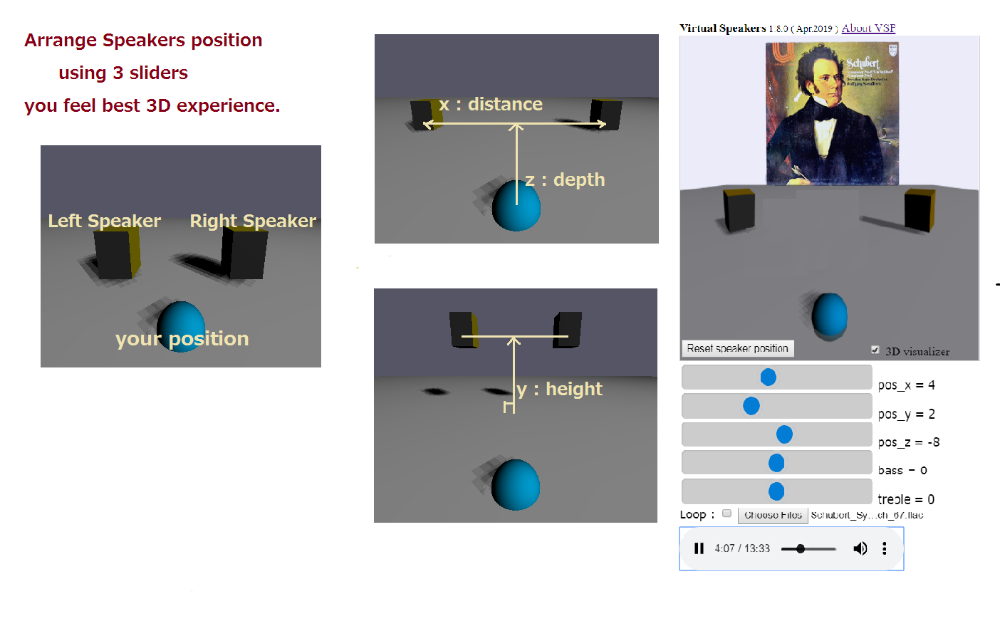

Supported audio codec is FLAC, WAV, MP3, OGG, and requires a PC/Mobile Phones,Tablet supported WebAudio.
Use sliders to move speakers.
( x : distance between the speakers y/z: height / depth of the speakers. )

[URL]
for PC & Mobile: https://virtualsp.github.io/VSP/
[* features *]
/Improved the sound sense of depth. ( Sep 2021 )
/Automatic Speaker Positioning.( Sep. 2020 )
When you check [Auto
positioning/visualiser], speakers automatically move to the suitable
position in several second.
Now, the positionning of the music file
is saved
to the local storage, and you can change the checkbox to unchecked.
Next time you open the file, VSP load the speakers
position from the local strage.
/ PWA supported. ( Offline Use / Install to Desktop or Home
: Feb 2020 )
How to Use Progressive Web Apps on PC/Android
https://support.google.com/chrome/answer/9658361?co=GENIE.Platform%3DDesktop&hl=en
/ Added Dancing 3D sound visualizer ( Apr. 2019 )
/ Corresponds to chrome 66 autoplay policies (Apr.2018)
/ Improved natural sound quality (Apr.2018)
/ Display embeded Album Art
treble
/ Supports FLAC files !!
/ Added play loop button
/ Automatically save/load speakers position for each music file on local storage
/ Multiple file select available
/ Bass-Treble control
[ Youtube ] Virtual Speakers for Youtube & Youtube Music is here
[ Data Accessing Policy ]
---- Local Storage ----
WVS automatically stores following data to local storage of your device when you moved sliders position.
{ key } music filename
{ data } the speakers position(x,y,z) and bass-treble level
You can clear Local Storage data from "chrome://settings/cookies/detail?site=virtualsp.github.io"
Or use Strage Inspector ' fn + f12 ' ( chrome ) / ' shift + f9 ' ( firefox )
Android : Open wrowser and try ' settings -> site settings -> storage '
---- Google Analytics Measurement Protocol ----
WVS uses 'Google Analytics Measurement' service. Google Analytics processes following data.
The total time a user spends on the site/
The geographic location of the user/
What browser and operating system are being used/
Screen size and whether Flash or Java is installed/
The referring site.
[ Contact and feedback ] bobie820g@gmail.com